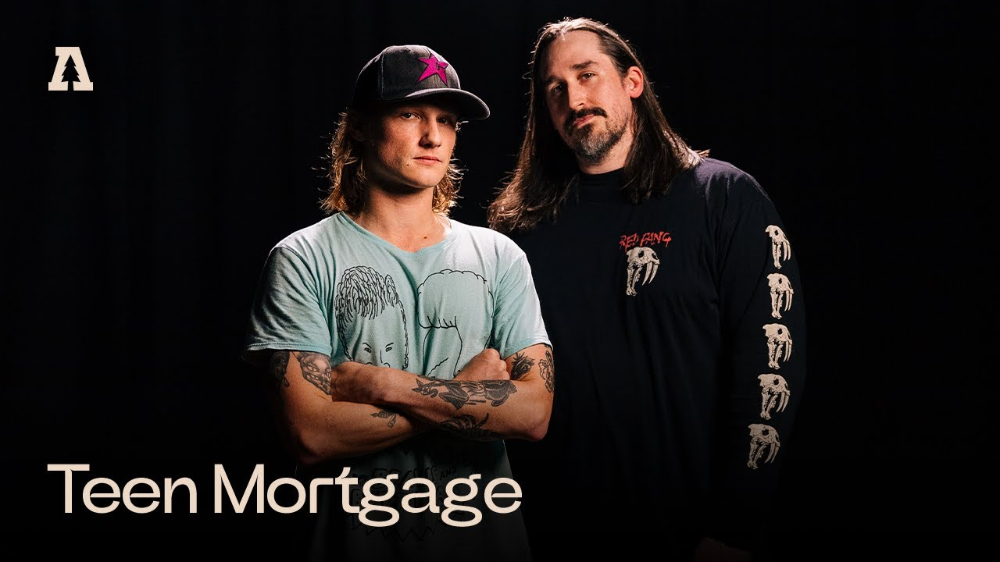

Linkin Park is known for their unique blend of rock, hip-hop, and electronic music.
Their debut album, "Hybrid Theory," is a classic.
I found their music when I was about 10 years old, and it has been a significant part of my life ever since.
Their sound is a mix of alternative rock and nu-metal, which resonates with many fans around the world.
The band's ability to blend different genres and their thought-provoking lyrics have made them a lasting influence in the music industry.
Slipknot is known for their aggressive style and energetic performances. Their self-titled debut album features a mix of heavy metal and nu-metal elements.
I discovered Slipknot during my teenage years, and their music helped me through some tough times.
The band's use of masks and uniforms adds a unique visual element to their identity, making them stand out in the metal scene.
Teen Mortgage is a gritty, high-energy rock duo known for their raw garage punk sound.
Hailing from Washington D.C., their music blends aggressive riffs, fast-paced drums, and rebellious vocals—like a sonic punch to the face.
Their debut album, "Teen Mortgage," is a chaotic ride through the world of punk rock, capturing the essence of youthful angst and rebellion.
With influences from skate-punk and garage rock, they deliver a sound that’s both nostalgic and fresh, reminiscent of early 2000s punk bands.

Stone Sour is known for their powerful vocals and emotional lyrics. Their self-titled debut album features a mix of hard rock and alternative metal elements.
I discovered Stone Sour during my high school years, and their music helped me through some tough times.
The band's ability to blend heavy instrumentation with melodic hooks has made them a standout act in the rock scene.
Avenged Sevenfold is known for their intricate guitar work and powerful vocals. Their album "City of Evil" marked a turning point in their career, showcasing a more mature sound.
I discovered Avenged Sevenfold during my high school years, and their music has been a constant source of inspiration for me.
The band's ability to blend metalcore with classic rock influences has made them a standout act in the modern rock scene.
Here is the best live performance of my favorite band!
Here is the best live performance of my favorite band!